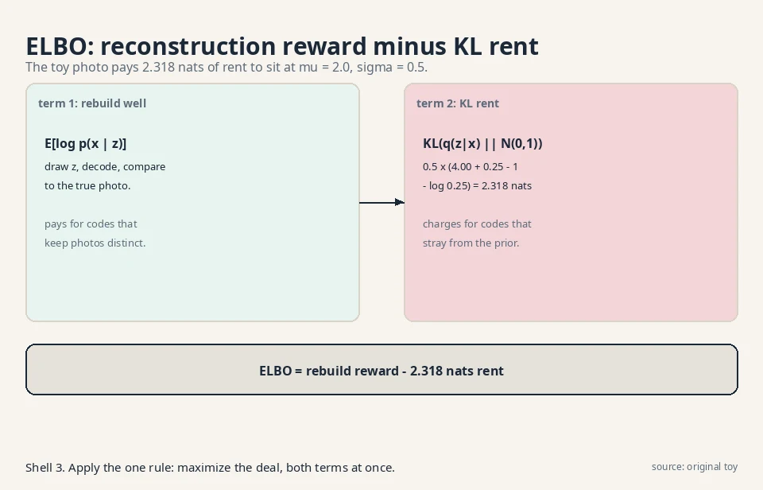
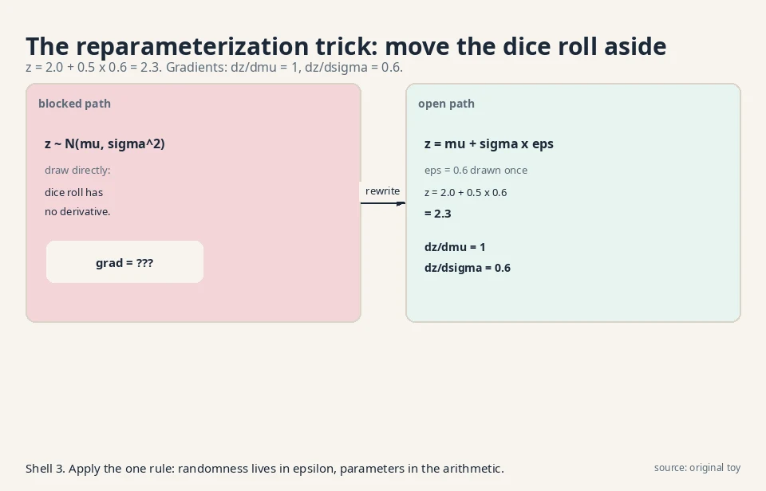
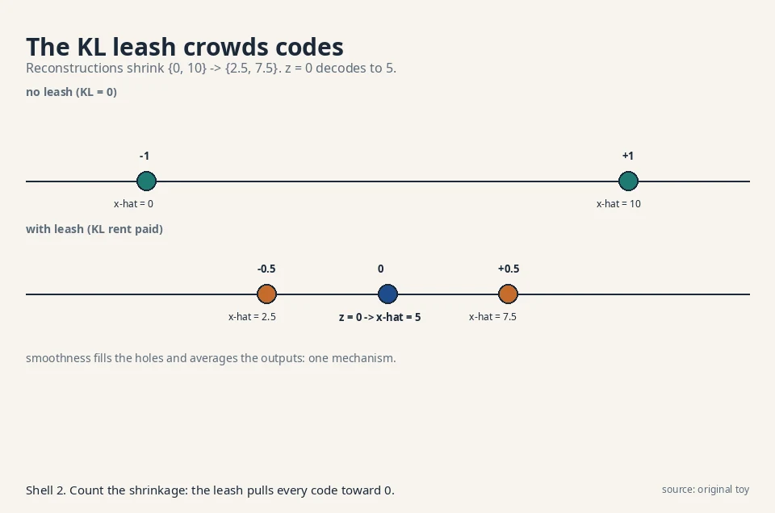
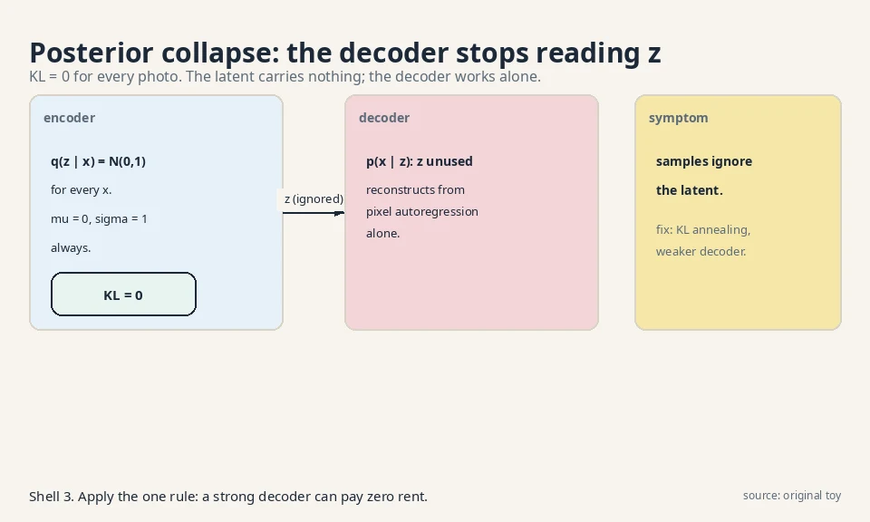
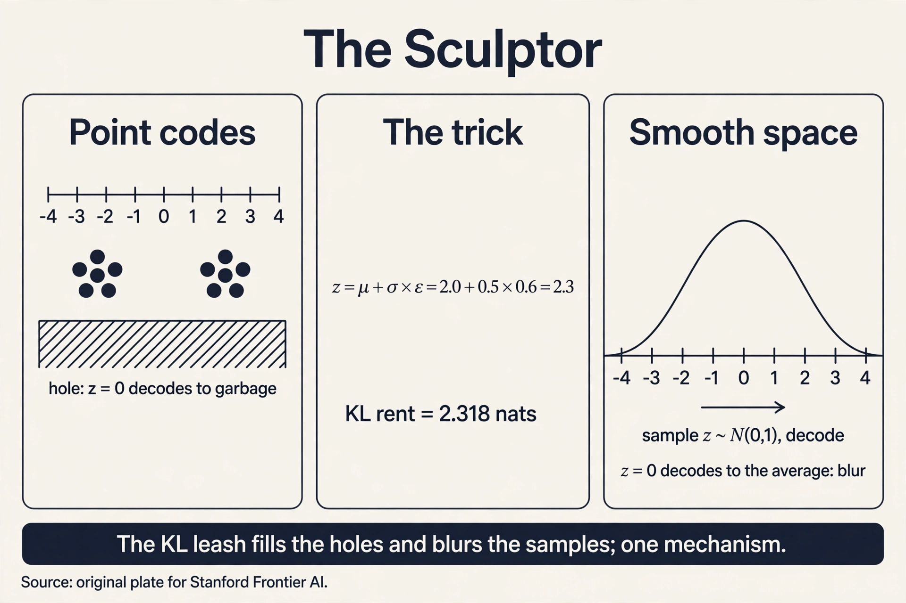

Lecture 3: Variational Autoencoders: The Sculptor
Video blocked (ad-blocker or local file mode).
Watch on YouTubeVideo not loading? Watch on YouTube
The lecture this chapter follows. Latent variables, the ELBO, and the reparameterization trick.
The question, for hidden causes
Restate the one question: learn the rule behind samples, draw fresh samples from it. The sculptor’s answer: assume every outcome has a hidden cause. A face photo is caused by hidden settings: pose, lighting, age. Learn two maps. An encoder guesses the settings from a photo. A decoder rebuilds a photo from settings. To sample, draw random settings and run the decoder. The hidden settings are latent variables: variables the model invents, never seen in the data.
First attempt: points in latent space
The naive sculptor trains an encoder and a decoder to reconstruct. The encoder maps each photo to one point z (a short vector of numbers). The decoder maps z back to a photo. The loss is reconstruction error: how far the rebuilt photo is from the original.
Watch it on a toy. Four training photos become four codes:
photo A -> z = -3.1 photo B -> z = -2.9 photo C -> z = +2.9 photo D -> z = +3.1
Reconstruction works: feed -3.1 in, photo A comes out. Now try to sample. Which z should you draw? The model learned no rule over z. It learned four points. Draw z = 0, the midpoint. The decoder never trained there. It outputs a smeared double image, half A and half C. The latent space has holes: regions where the decoder was never taught and produces garbage.
Two failures, both demonstrated. First, the holes: codes cluster at -3 and +3, and z = 0 decodes to nonsense. Second, no sampling rule: “draw a random z” is undefined because no distribution over z was ever learned. The machine reconstructs but cannot create.
The key question
What if the encoder output a distribution over codes instead of a point, and every code distribution was pulled toward one shared, simple prior?
The new idea: distributions, not points
The variational autoencoder changes two things. First, the encoder outputs the parameters of a distribution: a mean vector mu and a spread vector sigma. For one photo, the code is not z = 2.0 but “z drawn from a bell curve centered at 2.0 with width 0.5.” Second, a penalty pulls every photo’s code distribution toward one shared prior: the standard bell curve N(0,1), centered at 0 with width 1. Now z = 0 is populated by construction, the holes fill in, and the prior is the sampling rule: draw z from N(0,1), run the decoder.
The training objective is the ELBO, the evidence lower bound. It lower-bounds the true log-probability of a photo, and it has two terms:
ELBO = E[log p(x | z)] - KL(q(z | x) || p(z))
^^^^^^^^^^^^^^^ ^^^^^^^^^^^^^^^^^^^^
reconstruction: KL penalty:
rebuild x well keep codes near the prior
from the drawn z N(0,1)

Read it as a deal. The first term pays for good reconstructions. The second term charges rent for code distributions that stray from the prior. Maximizing the ELBO is maximizing a guaranteed lower bound on log p(x). (The sibling course, math-genai L04, derives this bound from Jensen’s inequality. Here we use it.)
Subchapter: the ELBO in one Jensen step
Where does the bound come from? Start from the true log-probability, which integrates over all codes:
log p(x) = log E_q[ p(x, z) / q(z | x) ]
The expectation is over the encoder’s distribution q. Now apply Jensen’s inequality: the log of an average is at least the average of the log, because log curves downward. Push the log inside:
log p(x) >= E_q[ log p(x, z) - log q(z | x) ] = ELBO
One inequality, and the intractable integral becomes a tractable expectation the model can estimate with samples of z. Split p(x, z) = p(x | z) p(z) and the two ELBO terms appear: reconstruction plus the KL rent. The gap between log p(x) and the ELBO is exactly the encoder’s error: a perfect encoder (q = the true posterior) would close it. Every VAE maximizes a guarantee, and the guarantee’s looseness is the encoder’s fault.
The KL term has a closed form for bell curves, so it can be computed by hand. For q = N(mu, sigma^2) against p = N(0,1):
KL = 0.5 x (mu^2 + sigma^2 - 1 - log(sigma^2))
Work it for the toy photo with mu = 2.0, sigma = 0.5:
KL = 0.5 x (4.00 + 0.25 - 1 - log(0.25)) = 0.5 x (3.25 + 1.386) = 2.318 nats
The encoder pays 2.318 nats of rent to place this photo’s code at mu = 2.0 with width 0.5. A photo coded at mu = 0, sigma = 1 pays zero rent: it already matches the prior. The KL term is a leash. The reconstruction term pulls codes apart so photos stay distinguishable. The leash pulls them back to the origin. Every VAE lives in this tension.
Subchapter: why diagonal Gaussians
The encoder outputs mu and sigma, not a full covariance matrix. Three reasons, each practical. First, the reparameterization trick needs a location-scale family: z = location + scale x noise. Diagonal Gaussians are the simplest such family. Second, a full covariance on a d-dimensional latent needs d^2 numbers. Diagonal needs 2d. At d = 512, that is 262,144 vs 1,024. Third, the KL to N(0,1) has the closed form used above only because both are diagonal. A full-covariance KL needs a matrix log determinant: the O(d^3) bill from L04, returned.
The price of diagonal: the encoder cannot model correlations between latent axes. Axis 3 cannot say “when I am high, axis 7 is low.” The decoder must absorb all the correlation structure. In practice the decoder is a deep network and manages. The decision rule: diagonal Gaussians are the default. Reach for fuller posteriors (normalizing-flow posteriors, ironically) only when the decoder is too weak to carry the correlations.
The reparameterization trick, by hand
One problem remains. Training needs gradients through the random draw z. But “draw a random number” has no derivative. You cannot backpropagate through a dice roll.
The trick moves the randomness aside. Instead of drawing z directly from N(mu, sigma^2), draw epsilon from N(0,1) and set:
z = mu + sigma x epsilon

Watch it with the toy numbers. mu = 2.0, sigma = 0.5, and the drawn epsilon = 0.6:
z = 2.0 + 0.5 x 0.6 = 2.3
The draw still comes from the right distribution: shifting and scaling a standard bell curve by mu and sigma gives N(mu, sigma^2). But now the randomness lives in epsilon, which has no parameters, and z is a plain arithmetic expression in mu and sigma. Gradients flow:
dz/dmu = 1 dz/dsigma = epsilon = 0.6
Nudge mu up by 0.01 and z rises by 0.01. Nudge sigma up by 0.01 and z rises by 0.006. The dice roll became differentiable by moving it out of the parameter path. That is the whole trick, and it is why VAEs train with ordinary backpropagation.
The sampling machine
Sampling is now one line. Draw z from the prior N(0,1). Run the decoder. Watch it on a toy decoder, x = 3z + 1:
draw z = 0.7 -> x = 3 x 0.7 + 1 = 3.1 draw z = -1.2 -> x = 3 x -1.2 + 1 = -2.6
Fresh z values, never seen in training, produce fresh outputs. The holes are gone because the KL leash forced training codes to cover the prior’s territory. The sampling rule exists because the prior is fixed and simple.
Explainer: Mathematics of Machines, the mathematics behind VAEs. Latent variables, the reparameterization trick, KL divergence, and the ELBO derived, not just stated. Watch after the reparameterization section.
Mapping back: what each property fixes
| Point-code failure | VAE answer | How |
|---|---|---|
| Latent holes: z = 0 decodes to garbage | KL leash toward N(0,1) | Every code distribution overlaps the prior’s territory. No region is untrained |
| No sampling rule over z | Fixed prior N(0,1) | Sample z from the prior, decode. The rule was chosen, not learned |
| Dice roll blocks gradients | z = mu + sigma x epsilon | Randomness moves to parameter-free epsilon. dz/dmu = 1, dz/dsigma = epsilon |
The honest price: blur, demonstrated
The leash that fills the holes also blurs the samples. Work it on the toy. Two training photos: x = 0 and x = 10. The decoder is the smooth map x-hat = 5z + 5. To reconstruct perfectly, photo 0 needs code z = -1 and photo 10 needs z = +1. But the KL leash charges rent for codes away from 0: KL(N(1,1) || N(0,1)) = 0.5 nats each way, and the model also pays for spread.
Suppose the leash wins partway and the codes settle at mu = -0.5 and mu = +0.5. The reconstructions become x-hat = 2.5 and x-hat = 7.5: each photo pulled 2.5 units toward the middle. Now sample z = 0, the most likely draw under the prior. The decoder outputs x-hat = 5, the average of the two photos. It matches neither training photo. It is a blurry compromise.

This is the VAE signature: smooth latent space, blurry samples. The same smoothness that lets z = 0 decode to something sane forces it to decode to an average. Sharpness would need the decoder to jump discontinuously between neighbors, which the KL-smoothed space forbids.
A second, quieter price: the ELBO is a bound, not the true likelihood. The gap between log p(x) and the ELBO equals the error of the encoder’s approximation. The model maximizes a guarantee, and the guarantee can be loose.
Subchapter: posterior collapse, demonstrated
Give the decoder too much power and the latent dies. Suppose the decoder is autoregressive over pixels: it can model every pixel from the previous pixels alone. Then the best deal is to set q(z|x) = N(0,1) for every photo. KL rent: exactly 0. The decoder reconstructs everything and never reads z.

Watch the ELBO accept this. Reconstruction is perfect (the strong decoder needs no help), KL is 0, so the ELBO is maximal. The model found a loophole: the bound does not require the latent to be useful. Samples from the prior decode to generic outputs that ignore z entirely. This is posterior collapse: the approximate posterior collapses onto the prior.
The fixes attack the loophole. KL annealing: start the KL weight at 0 and raise it slowly, so the latent gets useful before the rent arrives. Weaker decoders: deny the decoder autoregression so it must read z. Minimum KL budgets: force each latent axis to pay at least some rent (keep at least 0.5 nats per axis, say). The decision rule: if your latent interpolations do nothing, check the KL per axis first. Zeros mean collapse, not a bad prior.
Subchapter: beta-VAE: the blur knob
The ELBO weights reconstruction and KL equally. beta-VAE (Higgins et al., 2017) adds a knob: ELBO = E[log p(x|z)] - beta x KL. Beta = 1 is the standard VAE. Beta < 1 loosens the leash: codes drift outward, reconstructions sharpen, holes creep back. Beta > 1 tightens it: codes crowd the origin, samples blur further, but the latent axes disentangle (each axis tends to own one factor of variation, since crowding punishes redundancy).
On the toy: beta = 0.1 cuts the rent at mu = 2.0, sigma = 0.5 from 2.318 to 0.232 nats. The codes settle near -0.9 and +0.9 instead of -0.5 and +0.5. Reconstructions: x-hat = 0.5 and 9.5, nearly perfect. The price: z = 0.7 now sits between sparser territory, and prior samples degrade. The knob trades sharpness for hole-filling, continuously. There is no free setting.
Subchapter: VQ-VAE: the discrete turn
What if the latent is discrete? VQ-VAE (van den Oord et al., 2017) keeps a codebook of K vectors. The encoder outputs a continuous vector, which is replaced by its nearest codebook neighbor. The decoder sees only codebook entries. Gradients flow through the quantization via the straight-through estimator: copy the decoder’s gradient to the encoder as if the quantization were the identity.
The numbers: a 256x256 image becomes a 32x32 grid of codes from a codebook of 8,192 entries. Each code costs log2(8192) = 13 bits. The latent is 1,024 x 13 bits = 13,312 bits, against 256x256x3x8 = 1,572,864 bits of pixels: 118x compression into discrete tokens. Those tokens are exactly what DALL-E 1’s storyteller predicts autoregressively. VQ-VAE turned the sculptor’s continuous latent into the storyteller’s vocabulary.
No KL rent here: the prior over codes is learned (a small autoregressive model over the code grid), not fixed to N(0,1). The holes problem is dodged differently: every code is a codebook entry by construction, so every latent decodes to something the decoder trained on. Posterior collapse cannot happen either: the decoder gets nothing but the codes.
What is used where: the sculptor in production
| System | How it uses the sculptor | Evidence |
|---|---|---|
| Stable Diffusion 1/2 | A KL-regularized VAE compresses 512x512x3 to 64x64x4 before diffusion runs | Public: Rombach et al., 2022, arxiv 2112.10752 |
| DALL-E 1 | A discrete VAE (dVAE) compresses images to tokens. A transformer predicts the tokens | Public: Ramesh et al., 2021 |
| VQGAN | VQ-VAE plus adversarial loss for high-quality image tokens | Public research: Esser et al., 2021 |
| VITS | Conditional VAE with flow-based priors for end-to-end text-to-speech | Public: Kim et al., 2021, arxiv 2106.06103 |
| beta-VAE | Disentangled representation learning in research | Public research: Higgins et al., 2017, arxiv 1606.05579 |
The pattern: pure VAEs rarely ship as the final generator (the blur price). They ship as the compressor: the VAE builds the latent room, and a restorer (diffusion) or storyteller (transformer) dreams inside it.
Tying to CS229 L10: the amortized E-step
CS229 L10 teaches EM for mixtures: alternate between guessing hidden assignments (E-step) and fitting parameters (M-step). The E-step is an optimization run per datapoint per iteration. For two clusters with means 0 and 5 and a datapoint x = 4, the E-step computes responsibilities:
p(x=4 | cluster 1) ~ N(4; 0, 1) = 0.00013 p(x=4 | cluster 2) ~ N(4; 5, 1) = 0.242 responsibility of cluster 2 = 0.242 / (0.242 + 0.00013) = 0.9995
EM recomputes numbers like 0.9995 for every datapoint on every iteration: 1M datapoints x 100 iterations = 100M E-steps. The VAE’s encoder is an amortized E-step: one network that guesses q(z|x) in a single forward pass, for all x, with no per-datapoint loop. The cost of inference is amortized (spread) across the dataset into the encoder’s weights. Same job as the E-step, opposite schedule: EM optimizes per point at training time, the VAE learns one guesser upfront.
It makes the random draw differentiable by moving randomness out of the parameter path. Instead of sampling z from N(mu, sigma^2) directly, draw epsilon from N(0,1) and set z = mu + sigma x epsilon. With mu = 2.0, sigma = 0.5, epsilon = 0.6, z = 2.3, and gradients exist: dz/dmu = 1, dz/dsigma = 0.6. Backpropagation flows through mu and sigma while epsilon carries the dice roll. You can, but its gradient estimates have high variance: they depend on the sampled z multiplied by the loss, which swings wildly. The reparameterization gradient uses the pathwise derivative dz/dmu = 1, which is exact for the drawn epsilon and far less noisy. Lower variance means stable training with fewer samples per step.
E[log p(x|z)] rewards faithful reconstruction from the drawn code. KL(q(z|x) || p(z)) charges rent for code distributions that stray from the prior N(0,1). On the toy, coding a photo at mu = 2.0, sigma = 0.5 costs 2.318 nats of KL rent. The model maximizes the sum, so it balances distinguishable codes against cheap ones. The true log p(x) requires integrating over all z, which is intractable. The ELBO replaces the true posterior p(z|x) with the encoder’s approximation q(z|x), and Jensen’s inequality turns the approximation into a guaranteed lower bound. The gap between the bound and the truth is exactly the encoder’s error: a perfect encoder would close it. The sibling course (math-genai) carries the full derivation.
The KL leash pulls all codes toward the prior, so the decoder must map a smooth, crowded latent space to distinct photos. On the toy, codes settle at mu = -0.5 and +0.5 instead of -1 and +1, reconstructions shrink from {0, 10} to {2.5, 7.5}, and the most likely sample z = 0 decodes to 5, the average of both photos. Smoothness fills the holes and averages the outputs. The two are the same mechanism. That is the beta-VAE knob: scale the KL term by beta < 1. Reconstructions sharpen as the leash loosens, but the holes return: codes drift apart, unsampled regions reappear, and prior samples degrade. The tradeoff is intrinsic, not a bug. [uncertain]: whether the lecture covers beta-VAE. The knob follows directly from the ELBO form.
Photo x, encoder outputs mu = 2.0, sigma = 0.5. Step 1: draw epsilon = 0.6, form z = 2.0 + 0.5 x 0.6 = 2.3. Step 2: decode z to x-hat, score log p(x|z): say the reconstruction log-prob is -1.2 nats. Step 3: compute the KL rent in closed form: 0.5 x (4.00 + 0.25 - 1 - log 0.25) = 2.318 nats. ELBO = -1.2 - 2.318 = -3.518 nats. Training maximizes this over all photos: better reconstructions raise it, cheaper codes raise it. Because the expectation over q(z|x) is intractable in closed form for a neural decoder. One sample per photo per step is noisy but unbiased, and averaging over many steps and photos washes the noise out. The reparameterization trick is what makes that single sample’s gradient usable.
The decoder learns to reconstruct without reading z, and the encoder gives up: q(z|x) = N(0,1) for every x, KL = 0 everywhere. The ELBO accepts this because reconstruction is perfect and rent is zero. Detection: check the KL per latent axis. Axes at ~0 nats are dead. Also test latent interpolations: if sweeping z changes nothing in the output, the latent is decorative. KL annealing: ramp the KL weight from 0 upward so the latent gets useful before rent arrives. It costs tuning the schedule. Weaker decoder: remove autoregression so the decoder must read z. It costs some reconstruction quality. Both attack the loophole directly: make ignoring z expensive or impossible.
VQ-VAE replaces the Gaussian latent with a codebook of discrete entries and nearest-neighbor quantization. It wins when a downstream model wants tokens: DALL-E 1’s transformer predicts codebook indices autoregressively, which needs discrete symbols. It also dodges posterior collapse structurally (the decoder sees only codes) and the holes problem (every latent is a trained codebook entry). It loses the smooth interpolation that makes Gaussian VAEs good for editing faces along continuous axes. Nearest-neighbor lookup has no derivative: tiny encoder changes do not change the chosen code until they cross a boundary. The straight-through estimator copies the decoder’s gradient straight to the encoder, pretending the quantization was the identity. It is biased but works, and the codebook itself learns via a separate dictionary loss.
Depends on the downstream job. For editing (slide “smile” from 0 to 1), pick the continuous VAE: smooth axes give smooth edits, and beta > 1 disentangles the axes. For generation quality at scale, pick VQ-VAE plus a transformer prior: discrete tokens let the storyteller model the prior sharply, which is the DALL-E 1 recipe. The interview signal: name the tradeoff (smoothness and editability vs sharpness and token modeling), then match it to the product. In the continuous VAE, as the blur-vs-holes knob (beta). In VQ-VAE, nowhere: there is no KL to a fixed prior. The prior is a learned autoregressive model over codes, trained separately. That separation is VQ-VAE’s architectural point.

Recap: the whole lesson on one screen
- The question, for hidden causes. Learn the rule. Draw fresh samples. Assume hidden settings cause each outcome.
- First attempt: point codes. Encoder maps photos to points (-3.1, -2.9, +2.9, +3.1). Reconstruction works.
- Holes, demonstrated. z = 0 was never trained. The decoder outputs a smeared double image. No distribution over z was learned, so sampling is undefined.
- The key question. What if the encoder output a distribution over codes, all pulled toward one shared prior?
- The ELBO. Reconstruction reward minus KL rent. One Jensen step turns the intractable integral into a bound. Toy KL at mu = 2.0, sigma = 0.5: 2.318 nats. Diagonal Gaussians keep it cheap.
- The trick, by hand. z = 2.0 + 0.5 x 0.6 = 2.3. dz/dmu = 1, dz/dsigma = 0.6. The dice roll is differentiable.
- Sampling. Draw z ~ N(0,1), decode: z = 0.7 -> x = 3.1. Holes gone, rule exists.
- The price: blur. Codes shrink toward 0, reconstructions shrink {0,10} -> {2.5,7.5}, and z = 0 decodes to the average, 5. Plus the ELBO gap: a bound, not the likelihood.
- Failure modes. Posterior collapse: KL = 0, the decoder ignores z. Fixes: KL annealing, weaker decoders. beta-VAE: the blur knob, beta < 1 sharpens, holes return.
- The discrete turn. VQ-VAE: codebook, nearest neighbor, straight-through gradients. 8,192 codes, 13 bits each, 118x compression. The sculptor becomes the storyteller’s tokenizer.
- In production. VAEs ship as compressors: Stable Diffusion’s VAE, DALL-E 1’s dVAE, VITS speech. The restorer or storyteller dreams inside.
Official sources and further reading
Official: - W5L20: VAE (video RN3_gkjlYoA) and W6L21: VAE reparameterization (video blh_AnhwIpw): the lectures this chapter follows. [uncertain]: the exact toy numbers in the lectures are not verified. The worked values here are original toys built to the lectures’ topics. - Kingma & Welling, Auto-Encoding Variational Bayes (2013): https://arxiv.org/abs/1312.6114 (the original VAE paper).
Further reading: - math-genai (sibling) ELBO lesson: the full Jensen derivation this chapter uses as a result. - CS229 L10: EM and mixture models: the E-step this chapter’s encoder amortizes. - Higgins et al., beta-VAE (2017): https://arxiv.org/abs/1606.05579 (the blur knob). - van den Oord et al., VQ-VAE (2017): https://arxiv.org/abs/1711.00937 (the discrete turn).
Caveats from these sources. The 1-D Gaussian toys are illustrative. Real VAEs use high-dimensional diagonal Gaussians and deep encoder/decoder networks. The blur analysis assumes a smooth decoder. Architectural choices (autoregressive decoders, hierarchical latents) change the sharpness tradeoff.
Connections to the other courses
- CS229 L10: EM: the E-step the VAE encoder amortizes. Same hidden-variable job, opposite schedule.
- math-genai (sibling): the ELBO derivation via Jensen, and latent variable models as a family.
- CS229S L02: the transformer as a possible VAE decoder: autoregressive decoders sharpen samples by modeling pixel dependencies the smooth latent cannot.
- CS336: latent-space structure in large models. The KL tension reappears wherever a prior regularizes learned representations.
- L05 (this course): latent diffusion: the restorer dreams inside the sculptor’s latent room.